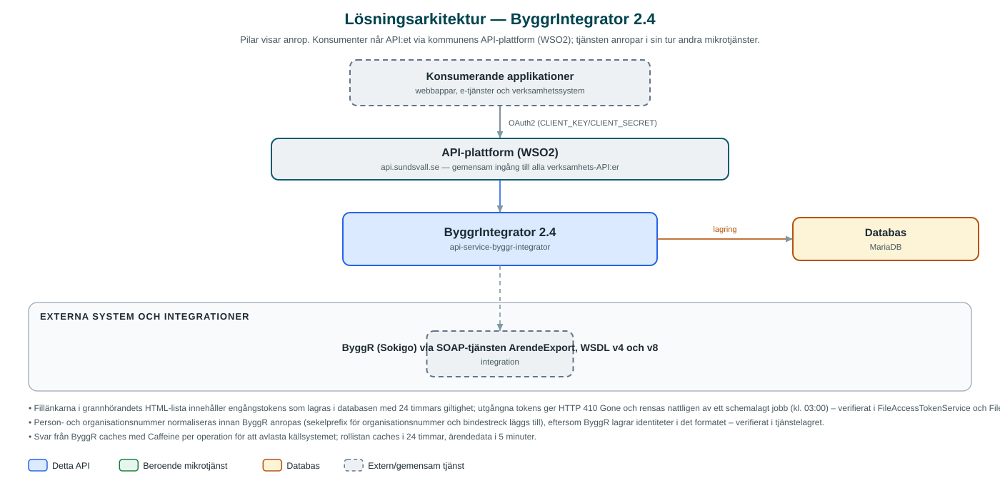

ByggrIntegrator
Hämtar byggärenden, grannhöranden och ärendehandlingar ur bygglovssystemet ByggR och gör dem tillgängliga för e-tjänster och andra applikationer.
Om API:et
ByggR är stadsbyggnadskontorets ärendesystem för bygglov. ByggrIntegrator kapslar in systemets SOAP-gränssnitt (ArendeExport) bakom ett modernt API, så att kommunens e-tjänster kan visa invånarens byggärenden utan att integrera direkt mot ByggR.
En central användning är grannhörande: när en granne ska yttra sig över ett bygglov kan e-tjänsten lista de ärenden där personen eller företaget är hörd part, vilka fastigheter som ingår och vilka handlingar som hör till ärendet. API:et listar också de ärenden där identiteten är sökande (rollen SOK), hämtar fastighetsbeteckning samt ärende- och remisstyp för ett ärende.
För e-tjänsteplattformen Open ePlatform finns särskilda resurser som levererar färdig HTML respektive XML, bland annat en fillista för ett grannhörande där varje länk innehåller en tidsbegränsad åtkomsttoken så att handlingen kan hämtas utan ny inloggning.
Det här gör API:et
- Grannhöranden – Listar ärenden där en person eller ett företag är hörd part i ett grannhörande, samt vilka fastigheter som ingår.
- Sökandens ärenden – Listar byggärenden där identiteten är sökande (rollen SOK i ByggR).
- Ärendehandlingar – Hämtar filer ur ByggR och levererar en färdig HTML-fillista för grannhörandets handlingar, med tidsbegränsade åtkomsttokens i länkarna.
- Ärendeinformation – Hämtar fastighetsbeteckning med beskrivning samt ärendetyp och remisstyp för ett ärende.
- Anpassat för Open ePlatform – Egna resurser som svarar med HTML respektive XML i det format e-tjänsteplattformen förväntar sig.
API-dokumentation
API:ets samtliga resurser, parametrar och datamodeller finns beskrivna i en OpenAPI-specifikation som är hämtad ur källkodsförrådet. Den kan utforskas interaktivt i Swagger UI eller laddas ner som YAML.
Teknisk dokumentation
Nedan beskrivs hur tjänsten är uppbyggd, vilka andra tjänster den anropar och vad som krävs för att driftsätta den. Informationen är härledd ur källkoden och dess konfiguration på GitHub.
Arkitektur

API:et är en mikrotjänst (Java 25, Spring Boot via kommunens gemensamma tjänsteplattform dept44 (8.0.8), byggd med Maven). Konsumenter når tjänsten via kommunens gemensamma API-plattform (WSO2) på api.sundsvall.se – tjänsten anropas aldrig direkt. Lagring: MariaDB med Flyway-migrationer; lagrar endast tidsbegränsade åtkomsttokens för filhämtning. Övriga integrationer som förekommer i koden: ByggR (Sokigo) via SOAP-tjänsten ArendeExport, WSDL v4 och v8.
Teknikstack
- Språk: Java 25
- Ramverk: Spring Boot via kommunens gemensamma tjänsteplattform dept44 (8.0.8), byggd med Maven
- Databas: MariaDB med Flyway-migrationer; lagrar endast tidsbegränsade åtkomsttokens för filhämtning
- Övrigt: SOAP-klient genererad ur ByggR:s WSDL (jaxb2-maven-plugin), Caffeine-cache av ByggR-svar, Thymeleaf för HTML-mallar, dept44-scheduler för schemalagd städning
Beroenden till andra mikrotjänster
Inga anrop till andra mikrotjänster hittades i källkodens konfiguration.
Konfiguration och driftsättning
- application.yml med URL och timeouts för ByggR-integrationen
- MariaDB-anslutning; databasschemat versionshanteras med Flyway
- Cacheinställningar per svarstyp (roller och handlingstyper 24 timmar, ärendedata 5 minuter)
- Åtkomsttokens giltighetstid (24 timmar) och cron-uttryck för nattlig städning
- Anrop görs per kommun – municipalityId ingår i API-vägarna
Noterbart ur källkoden
- Fillänkarna i grannhörandets HTML-lista innehåller engångstokens som lagras i databasen med 24 timmars giltighet; utgångna tokens ger HTTP 410 Gone och rensas nattligen av ett schemalagt jobb (kl. 03:00) – verifierat i FileAccessTokenService och FileAccessTokenScheduler.
- Person- och organisationsnummer normaliseras innan ByggR anropas (sekelprefix för organisationsnummer och bindestreck läggs till), eftersom ByggR lagrar identiteter i det formatet – verifierat i tjänstelagret.
- Svar från ByggR caches med Caffeine per operation för att avlasta källsystemet; rollistan caches i 24 timmar, ärendedata i 5 minuter.
- Binärt filinnehåll (filBuffer) maskeras i anropsloggarna via Logbook-filter.
- Tjänsten anropar inga andra kommun-API:er – all data hämtas direkt ur ByggR.
Källkod
Källkoden är öppen och finns hos Sundsvalls kommun på GitHub. I källkodsförrådet finns även instruktioner för att klona, konfigurera och starta tjänsten i egen miljö.